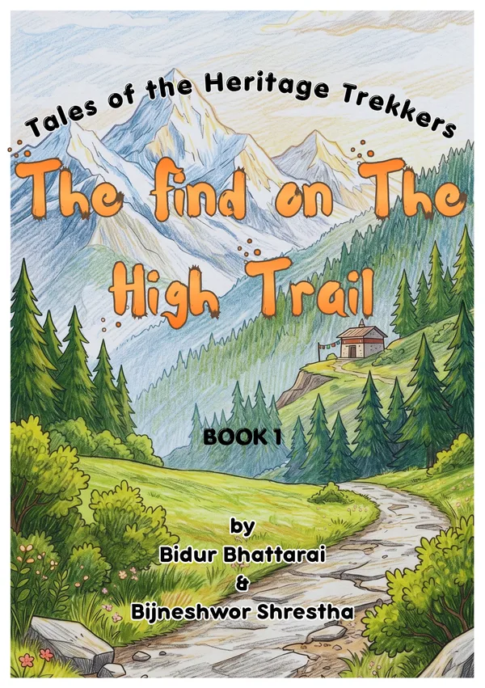

Stories
Picture books so far, in two series.
Ages 2 to 6
Meet the family Tales of the Little Red Pandas
Picture books about one family, with a note for the grown-ups who read along.

With WCHN
Meet the Trekkers Tales of the Heritage Trekkers
Five friends discover, understand and protect Nepal's written heritage.

Book One · Printed
The Find on the High Trail
A forgotten path leads Tenzing the yak to an old bundle wrapped in cloth. Wooden covers. A string tied around it.

Book Two · In editing
The Manuscript, Rain and Rescue
The bundle is open at last. Then the roof of the old gumba begins to leak, and the manuscript must be carried somewhere dry.
Bring the stories home. Tell us who you are and what you are looking for.
Get in touch